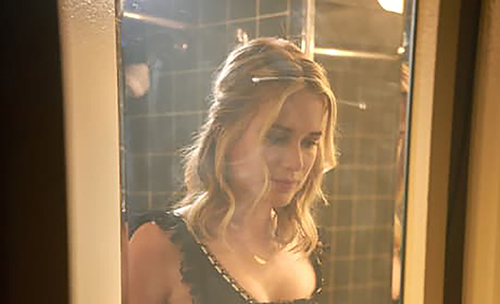
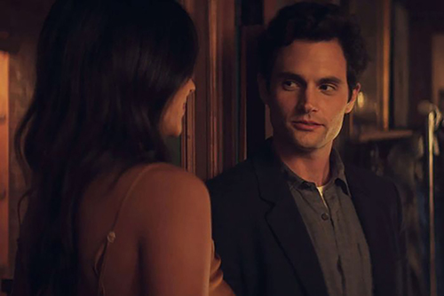
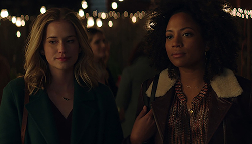

You : La comédie romantique qui vire très vite au cauchemar
La série originale Netflix qui n’en était pas une
La série YOU a connu des débuts compliqués. Le pilote a été diffusé sur la chaîne américaine Lifetime en septembre 2018. Malheureusement, il n’a pas connu le succès escompté et la série a été annulée par la chaîne.
Un succès surprenant
Pourtant, plusieurs mois plus tard, la série a connu un succès surprenant sur la plateforme Netflix. Celle-ci a commencé à être diffusée sur la plateforme de streaming fin décembre 2018 et explosait déjà de très loin ses chiffres sur câble. Et depuis ça, Netflix a repris le projet en main et annonçait déjà une saison deux début 2019.
L’ordinaire libraire New-Yorkais…
‘You’ s’ouvre sur la scène du beau libraire Joe Goldberg rencontrant Guinevere Beck à sa librairie. Il tombe amoureux d’elle au premier regard. Jusque-là, la série ressemble à une banale comédie romantique diffusée l’après-midi sur TF1. Si on ignore le fait que le beau jeune homme est en réalité un psychopathe cyber- stalker.

À travers le regard d'un psychopathe
En effet, la série est racontée dans le point de vue de Joe. C’est intelligent, cela invite le spectateur à rentrer dans son esprit dès le début. On peut voir comment il rationalise des comportements dégoûtants par des monologues qui ressemblent à des choses que l’on pourrait lire sur le subreddit incel (involuntary celibate, communauté internet d’hommes misogynes) ou dans les coins les plus sombres de 4chan.
Les créateurs et les intentions de la série
You est co-créé par Sera Gamble (qui est derrière la série The Magicians diffusée sur SyFy) et par le producteur de Riverdale Greg Berlanti. Les deux ont développé la série après avoir fait des recherches sur la manière dont la technologie avait changé notre manière de gérer notre vie privée. La série est une adaptation du roman de Caroline Kepnes du titre éponyme.
À ce sujet, Gamble confiait au journal en ligne refinery29 : C’est ce qui nous intéressait tous les deux :
d'observer le monde à travers l’angle d’un mec qui n’est pas Mr. Robot. Quelqu’un qui n’est pas un génie super
hacker, un mec fou. Il est quelqu’un sur qui tu pourrais tomber au cours de ta journée.

C’est ça qui rend le "monstre" que représente Joe dangereux. Il est bien plus réaliste, justement parce qu’on ne le présente pas comme un monstre. Il est quelqu’un qu’on pourrait rencontrer sur Instagram, de qui on pourrait recevoir un DM, ou qui refuserait d’accepter un non tout simplement.
You et le danger de l'Open Data
Plusieurs heures après la rencontre entre Joe et Beck, en sachant seulement son nom de famille, il sait déjà tout d’elle. En utilisant une photo de son Instagram où elle emménage dans son appartement, il peut retrouver la location de celui-ci grâce à Reverse Google Image en quelques secondes. Le matin suivant, il se tient devant son appartement et la fixe alors qu’elle se déshabille.
Évidemment, personne possédant des réseaux sociaux ne va aussi loin que Joe. Pourtant, on ne peut nier que beaucoup d’internautes possèdent ses traits. Joe est obsessionnel, servant d’exemple au fait que les réseaux sociaux ont influencé beaucoup de personnes à devenir plus obsessionnelles que la normale.
-

-

- 
- 
-

- 
-

-